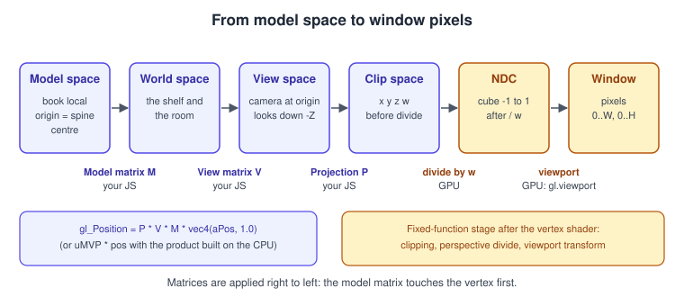
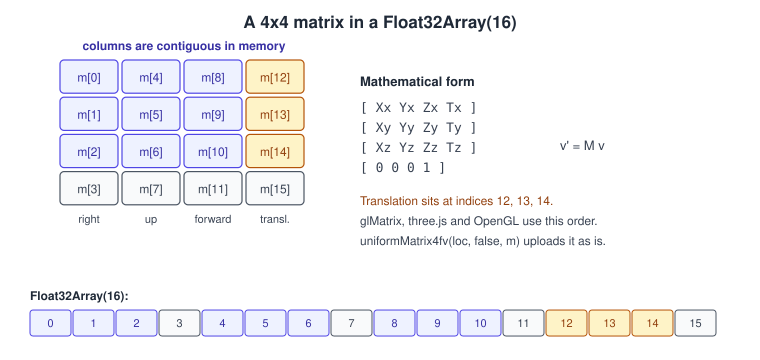
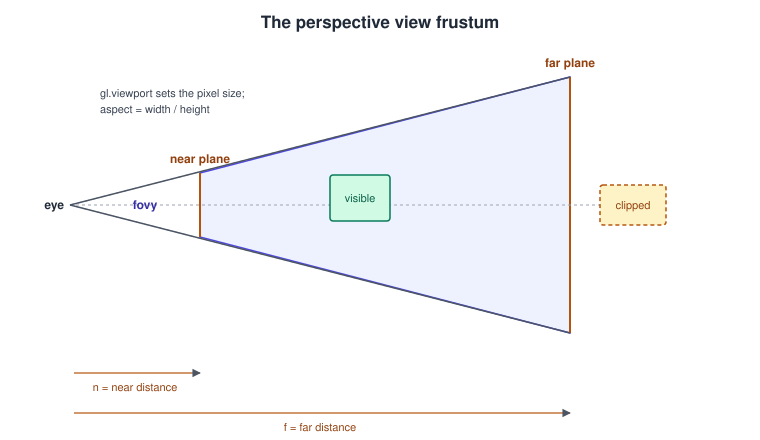
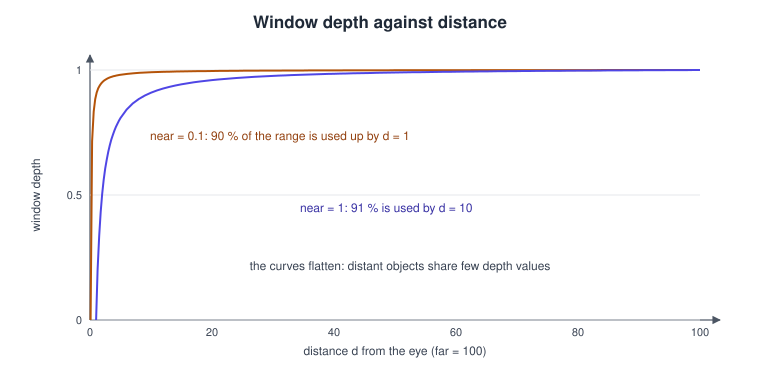
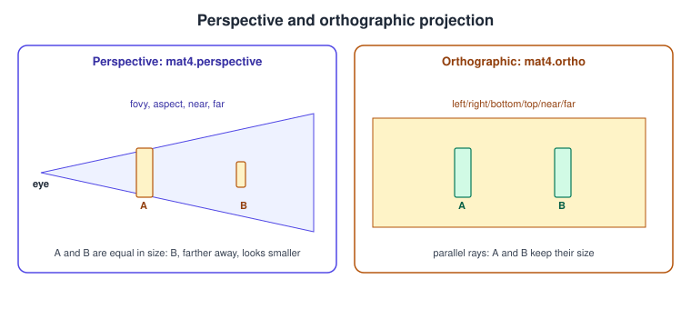
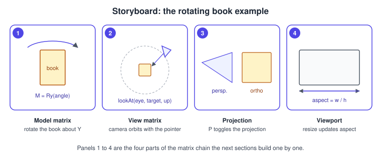

Transforms and Cameras
|
This content was generated with the assistance of AI and should be verified against the official documentation before being relied on in production. |
WebGL has no camera, no scene and no matrix stack. It has a vertex shader that must write a clip-space position, and everything between a book’s local coordinates and that position is ordinary arithmetic that you do in JavaScript (and in the shader). This page builds that arithmetic: the model, view and projection matrices, how they are stored and uploaded, how to build a camera that orbits the Bookshelf, how perspective and orthographic projection differ, what the GPU does after the vertex shader, and how the same chain looks in WebGPU and in three.js.
The facts were checked in November 2026 against the WebGL 2.0 specification (editor’s draft of 2026-06-30), the MDN WebGL
tutorials and the glMatrix documentation (gl-matrix 3.4.4 on npm at the time of writing; three.js r187, three@0.187.0, for
the comparisons). The code runs in any evergreen browser with WebGL 2 (about 97 % of global usage), served over HTTP because it
uses ES modules. The vector-and-matrix mathematics is explained generally in
Vectors, Matrices and Homogeneous Coordinates,
Coordinate Spaces and Transforms and
Rotations and Quaternions; the desktop OpenGL treatment, which is
mathematically identical, is in Coordinate Systems and Transforms
and Cameras and Projection. This page concentrates on what is specific
to WebGL and to JavaScript.
In the Bookshelf running example this is step 3 of the raw WebGL track: the textured book quad becomes a rotating box that you can orbit with the pointer and view in perspective or orthographic projection. It follows Buffers, Attributes, Uniforms and VAOs, whose indexed book box and uniform block it reuses, and it prepares Lighting in Shaders. The three.js objects that wrap the same matrices are in three.js Scene Graph and Transforms.
The chain of spaces

A vertex starts in the coordinates of its mesh (model space: the book’s origin is wherever the artist put it). Four steps carry it to the screen:
| Step | Who computes it | Question it answers | Result |
|---|---|---|---|
Model matrix \(M\) |
your JavaScript, applied in the vertex shader |
where is this book in the shelf? |
world space |
View matrix \(V\) |
your JavaScript |
where is that relative to the camera? The camera sits at the origin looking down the negative z axis |
view space (also called eye or camera space) |
Projection matrix \(P\) |
your JavaScript |
how much of the world is visible and how does depth turn into size? |
clip space, a four-component position \((x_c, y_c, z_c, w_c)\) |
Perspective divide |
the GPU, after the vertex shader |
divide by \(w_c\) |
normalized device coordinates (NDC), a cube from -1 to 1 on each axis |
Viewport transform |
the GPU, from |
which pixels of the canvas? |
window coordinates: x and y in pixels with the origin at the bottom left, depth between 0 and 1 |
Everything in one line of GLSL, with the matrices applied right to left, so the model matrix touches the vertex first:
gl_Position = uProj * uView * uModel * vec4(aPosition, 1.0);Source: MDN: WebGL model view projection
Whatever the vertex shader writes to gl_Position is clip space: vertices are clipped there (against \(-w_c \le x_c, y_c, z_c \le w_c\))
and the GPU then divides by \(w_c\). That is why the projection matrix leaves the perspective information in the fourth component
instead of dividing itself, and why the vertex shader outputs a four-component vector. The stages after the vertex shader are
described in The WebGL Rendering Pipeline.
Matrices in JavaScript: column-major Float32Array

WebGL, like OpenGL, expects matrices as 16 numbers in column-major order: the first four numbers are the first column, so the
translation of a 4x4 transform is in elements 12, 13 and 14. glMatrix (the library used on this page), three.js (Matrix4.elements)
and the GLSL mat4 constructor all use this order, which is why uniformMatrix4fv(location, false, matrix) can upload the array
unchanged. The second argument, transpose, must be false in WebGL 1 and should simply be false everywhere.
Math textbooks usually write matrices with the row index first (M[row][column]), and a vector is a column, so a transform is
\(\mathbf{v}' = M\,\mathbf{v}\) and several transforms compose right to left. In code this reads
gl_Position = P * V * M * v. A frequent beginner error is to fill a Float32Array row by row from a textbook, which silently
uploads the transpose.
The glMatrix API in one table
glMatrix is the usual small library for this job (alternatives with a similar shape are twgl.js and the matrix helpers inside
three.js itself). It stores vectors and matrices in Float32Array (the default; glMatrix.setMatrixArrayType(Array) switches to
64-bit doubles for CPU-side maths) and every function writes into an out argument given first, so that nothing is allocated
per frame.
| Function | What it does | Notes |
|---|---|---|
|
new identity matrix, reset to identity |
allocate once, reuse each frame |
|
post-multiply |
|
|
build \(T\,R\,S\) from a quaternion, a translation and a scale in one call |
the usual way to build a model matrix from separate parts |
|
\(out = a \cdot b\) |
|
|
view matrix for a camera at |
right-handed, camera looks down -Z |
|
perspective projection, |
clip z in -1 to 1; |
|
orthographic projection |
same clip range |
|
inverse and transpose |
|
|
inverse transpose of the upper-left 3x3, the normal matrix |
see the normal-matrix section below |
|
variants whose clip depth is 0 to 1 |
for WebGPU, not for WebGL |
Source: glMatrix documentation: mat4
The model matrix
A model matrix places a mesh in the world. It is nearly always the product of a scale, a rotation and a translation, applied in that order to the vertex (scale in the model’s own axes, then rotate, then move), which is written \(M = T\,R\,S\):
import { mat4, quat, vec3 } from 'gl-matrix';
const model = mat4.create();
const q = quat.create();
quat.fromEuler(q, 0, 35, 0); // degrees about x, y, z
mat4.fromRotationTranslationScale(
model,
q, // rotation
vec3.fromValues(0.9, 0.0, 0.0), // translation
vec3.fromValues(0.6, 0.9, 0.15), // scale: a unit box becomes a book
);Points worth remembering:
-
Order matters. \(M = T\,R\,S\) rotates the object about its own origin and then moves it, so a book spins in place on the shelf. Reversing the product (rotation after translation) would swing the book around the world origin instead.
fromRotationTranslationScalealways builds \(T\,R\,S\); a chain of calls such astranslate(out, out, v)thenrotateY(out, out, a)also builds \(T\,R\) because each call post-multiplies. -
Hierarchies multiply: the world matrix of a book on a shelf is
shelfWorld * bookLocal. three.js keepsmatrix(local) andmatrixWorld(the product up the parent chain) for exactly this reason. -
Rotations are best stored as quaternions and composed with
quat.multiply; Euler angles suffer from gimbal lock and an order convention (see Rotations and Quaternions). -
Non-uniform scale breaks the rule that the upper-left 3x3 of the model matrix can transform normals; use the normal matrix below.
-
Handedness. The coordinate system is right-handed with y up: x to the right, y up, z towards the viewer. A mirror (negative scale) flips the triangle winding and needs
gl.frontFaceor a flipped cull setting.
The view matrix and lookAt
The view matrix is the inverse of the camera’s world matrix: moving the camera right by one unit is the same as moving the world left by one unit. glMatrix builds it from three vectors:
const view = mat4.create();
mat4.lookAt(view, /* eye */ [0, 1.2, 4], /* center */ [0, 0.5, 0], /* up */ [0, 1, 0]);Source: glMatrix documentation: lookAt
lookAt computes an orthonormal basis: the forward axis \(\mathbf{f} = \operatorname{normalize}(center - eye)\), the right axis
\(\mathbf{s} = \operatorname{normalize}(\mathbf{f} \times up)\) and the corrected up axis \(\mathbf{u} = \mathbf{s} \times \mathbf{f}\); the
matrix rotates these onto the x, y and negative z axes and then translates by \(-eye\). It fails (NaNs or a collapsed view) when
up is parallel to the view direction, which is what happens if a free-look camera pitches exactly to +90 or -90 degrees: clamp the
pitch a hair below that, as in the orbit code below.
An orbit camera
The Bookshelf viewer orbits a target at a fixed radius, controlled by a yaw angle \(\theta\) and a pitch angle \(\varphi\). The eye is placed on a sphere:
\[ eye = target + r \begin{pmatrix} \cos\varphi \sin\theta \\ \sin\varphi \\ \cos\varphi \cos\theta \end{pmatrix} \]
const target = vec3.fromValues(0, 0.4, 0);
let yaw = 0.6, pitch = 0.35, radius = 4;
const eye = vec3.create();
const view = mat4.create();
function updateView() {
const limit = Math.PI / 2 - 0.01; // keep away from the poles
pitch = Math.max(-limit, Math.min(limit, pitch));
radius = Math.max(1.5, Math.min(12, radius));
vec3.set(
eye,
target[0] + radius * Math.cos(pitch) * Math.sin(yaw),
target[1] + radius * Math.sin(pitch),
target[2] + radius * Math.cos(pitch) * Math.cos(yaw),
);
mat4.lookAt(view, eye, target, [0, 1, 0]);
}A first-person or fly camera works the other way round: store the camera’s position and a yaw and pitch, derive the forward
vector from them and call lookAt(view, position, position + forward, up). Smooth movement multiplies velocity by the frame time
rather than adding a constant per frame (see Game Loop and Frame Timing).
Ready-made controllers belong to three.js (OrbitControls,
three.js Interaction, Picking and Controls).
The projection matrix

Perspective
A perspective projection turns the pyramid-shaped view frustum into the clip cube. It is defined by four numbers:
| Parameter | Meaning | Typical value |
|---|---|---|
|
vertical field of view, in radians (glMatrix) or degrees (three.js |
35 to 60 degrees; a wider angle exaggerates perspective at the edges |
|
|
updated on every resize |
|
distance from the eye to the near plane (positive number) |
as large as the scene allows, such as 0.1 for a desk scene |
|
distance to the far plane |
as small as the scene allows, such as 50 to 1000 |
The matrix, with \(f = 1 / \tan(fovy / 2)\), is:
\[ P = \begin{pmatrix} \frac{f}{aspect} & 0 & 0 & 0 \\ 0 & f & 0 & 0 \\ 0 & 0 & \frac\{far + near}\{near - far} & \frac\{2\,far\,near}\{near - far} \\ 0 & 0 & -1 & 0 \end{pmatrix} \]
The last row copies the negated eye-space depth into \(w_c\): \(w_c = -z_e\). After the divide, a point at distance \(d\) in front of the camera (\(z_e = -d\)) has the NDC depth
\[ z_{ndc} = \frac\{far + near}\{far - near} - \frac\{2\,far\,near}\{(far - near)\,d\} \]
which is -1 at the near plane and +1 at the far plane. The viewport transform then maps it to the range given by gl.depthRange(0, 1)
(the default) for the depth buffer. Nothing in the equation is linear in \(d\), and the next figure shows the consequence.

Depth precision is spent mostly near the camera. With near = 0.1 and far = 100 about 90 % of the depth values are used up by
distance 1; with near = 1, 91 % are used up by distance 10. The depth buffer has a fixed number of bits (commonly 24 in WebGL,
requested through the depth context attribute), so distant surfaces that are close together fall into the same value and flicker
("z-fighting"). The cure is to move the near plane as far out as the scene permits (the single most effective change), pull the far
plane in, and keep coplanar surfaces apart (a poster on a wall needs a small offset or gl.polygonOffset). A floating-point depth
buffer gains little here, because the clip range of -1 to 1 wastes most of the extra precision, which is one reason WebGPU uses 0 to
1; libraries such as three.js handle these details inside their own renderers.
Source: WebGL 2.0 specification
mat4.perspective also accepts far = Infinity (or null), which produces a projection that never clips distant objects and
loses less precision at the far end; it is useful for a sky box but not for a scene with a depth-tested floor, where the near plane
decides the precision anyway.
Orthographic

An orthographic projection keeps parallel lines parallel and gives objects the same size at every depth. Its volume is a box:
\[ P = \begin{pmatrix} \frac{2}\{r - l} & 0 & 0 & -\frac\{r + l}\{r - l} \\ 0 & \frac{2}\{t - b} & 0 & -\frac\{t + b}\{t - b} \\ 0 & 0 & \frac\{-2}\{f - n} & -\frac\{f + n}\{f - n} \\ 0 & 0 & 0 & 1 \end{pmatrix} \]
with \(l, r, b, t\) the left, right, bottom and top of the box at any depth and \(n, f\) its near and far distances. The last row is \((0, 0, 0, 1)\), so \(w_c = 1\) and the divide changes nothing. It is the right tool for a 2D user interface drawn with WebGL, for isometric or technical views, for the light’s point of view in a directional-light shadow map (Framebuffers and Render to Texture) and for the HUD of the "catch the falling books" game. To make an orthographic camera show the same extent as a perspective one at the orbit target, derive the half-height from the same field of view:
const halfHeight = radius * Math.tan(fovy / 2);
mat4.ortho(proj, -halfHeight * aspect, halfHeight * aspect, -halfHeight, halfHeight, 0.1, 100);Source: glMatrix documentation: ortho
Choosing near, far and field of view
-
Put
nearat roughly one tenth of the distance to the closest thing you look at; never 0 (the perspective matrix degenerates) and rarely below 0.01 for a metre-scale scene. -
Put
farjust beyond the farthest visible object; an unnecessaryfar = 100000costs depth precision. -
A narrow field of view (below 30 degrees) looks like a telephoto lens and flattens the shelf; above 90 degrees gives the "fish-eye" distortion at the screen edges. Mobile portrait screens usually want a larger vertical field of view than landscape monitors; keep the vertical value and let
aspectchange, or computefovyfrom a fixed horizontal one. -
Scenes with a huge depth range (planets, large terrain) switch to camera-relative rendering (subtract the camera position in double-precision JavaScript before converting to
Float32Array) because 32-bit floats lose centimetre precision a few kilometres from the origin.
After the vertex shader: viewport, aspect and the drawing buffer
The viewport transform maps NDC to the pixels of the drawing buffer of the canvas, which has its own size, canvas.width by
canvas.height, independent of the CSS size of the element:
\[ x_w = \frac\{x_{ndc} + 1}{2}\,W + x_0, \qquad y_w = \frac\{y_{ndc} + 1}{2}\,H + y_0 \]
with gl.viewport(x0, y0, W, H). WebGL does not change the viewport when the canvas is resized; the initial viewport matches the
drawing buffer at creation time only, so the code must call gl.viewport again (a very common cause of a stretched or cropped
image). The aspect ratio in the projection matrix must be the ratio of the drawing buffer, not of the CSS box, or the image is
squashed.
For a sharp image on high-density screens the drawing buffer is larger than the CSS box by devicePixelRatio. A ResizeObserver
provides the exact device-pixel size where supported, which avoids the rounding errors of multiplying CSS sizes:
function observeCanvasSize(canvas, onResize) {
const observer = new ResizeObserver((entries) => {
const entry = entries[0];
let width;
let height;
if (entry.devicePixelContentBoxSize) {
width = entry.devicePixelContentBoxSize[0].inlineSize;
height = entry.devicePixelContentBoxSize[0].blockSize;
} else {
const dpr = window.devicePixelRatio || 1;
width = Math.round(entry.contentBoxSize[0].inlineSize * dpr);
height = Math.round(entry.contentBoxSize[0].blockSize * dpr);
}
width = Math.max(1, Math.min(width, gl.getParameter(gl.MAX_RENDERBUFFER_SIZE)));
height = Math.max(1, Math.min(height, gl.getParameter(gl.MAX_RENDERBUFFER_SIZE)));
if (canvas.width !== width || canvas.height !== height) {
canvas.width = width;
canvas.height = height;
}
onResize(width, height);
});
try {
observer.observe(canvas, { box: 'device-pixel-content-box' });
} catch (e) {
observer.observe(canvas, { box: 'content-box' }); // browsers without the device-pixel box
}
}Source: MDN: ResizeObserver
Setting canvas.width or canvas.height (even to the same value) clears the drawing buffer, so assign them only when they
change, as above. Very large buffers use a lot of memory (4 bytes per pixel for colour plus depth); on phones, capping the ratio at 2
is a common compromise. More resize and pixel-ratio guidance is in
Performance and Debugging.
gl.depthRange(zNear, zFar) maps the NDC depth range -1 to 1 onto window depth (default 0 to 1). The scissor box (gl.scissor
with gl.enable(gl.SCISSOR_TEST)) limits drawing and clearing to a rectangle, which is how split-screen and mini-map views are made
with several viewport and projection pairs in one canvas.
The normal matrix
Normals are directions, not points, and they must stay perpendicular to the surface when the model is scaled non-uniformly. They are transformed by the inverse transpose of the model matrix’s upper-left 3x3:
\[ N = \left( M_\{3 \times 3}^\{-1} \right)^{T} \]
For a pure rotation (and uniform scale followed by a re-normalisation) \(N\) equals the 3x3 of \(M\), which is why the box example may
write mat3(uModel) * aNormal. With the board of the shelf scaled to 3 x 0.06 x 0.6 that shortcut is wrong, so the example computes
the proper matrix on the CPU and uploads it as a mat3 uniform:
import { mat3 } from 'gl-matrix';
const normalMat = mat3.create();
mat3.normalFromMat4(normalMat, model); // inverse transpose of the upper-left 3x3
gl.uniformMatrix3fv(uNormalMat, false, normalMat);In the shader, vNormal = normalize(uNormalMat * aNormal) is then correct for any model matrix without shear. Computing the
inverse inside the vertex shader (inverse(mat3(uModel)) exists in GLSL ES 3.00) repeats the work for every vertex; do it per
object on the CPU. Lighting that uses the result is in Lighting in Shaders.
Conventions that differ between APIs
The matrices above follow the OpenGL conventions that WebGL inherits. Moving the same maths to another API changes a few signs and ranges; these are the places to look when a ported scene is upside down, mirrored or invisible.
| Convention | WebGL (and OpenGL) | WebGPU | Vulkan | Metal |
|---|---|---|---|---|
Clip-space depth range |
-1 to 1 |
0 to 1 |
0 to 1 |
0 to 1 |
NDC y axis |
up |
up |
down |
up |
Window origin of the viewport and of pixel readback |
bottom-left |
top-left |
top-left |
top-left |
Matrix libraries |
|
|
|
|
Texture coordinates have their origin in the lower left in OpenGL and WebGL (UNPACK_FLIP_Y_WEBGL flips an HTML image on upload
to match; see Textures and Samplers) and in the upper left in the other three. The
comparison with WebGPU, including the same lit rotating book, is in
WebGPU Overview and Comparison; the OpenGL equivalents of the whole
topic are in Cameras and Projection.
The same ideas in three.js
three.js stores the same matrices, with the same column-major elements arrays, and updates them for you:
| Concept on this page | three.js (r187) |
|---|---|
Model matrix |
|
View matrix |
|
Projection matrix |
|
|
|
|
|
|
|
Normal matrix |
|
Aspect handling on resize |
|
The details of these objects and of the matrix hierarchy are in Getting Started with three.js and three.js Scene Graph and Transforms.
A complete example: the rotating book with an orbit camera

The example draws the book (a unit box scaled to book proportions) and a shelf board, rotates the book with a model matrix, orbits the camera with the pointer (drag to orbit, wheel to zoom), toggles perspective and orthographic with the key P, and keeps the projection correct when the window changes. Shading is a single Lambert term, enough to read the shapes; the real lighting follows later. It uses the normal matrix and the viewport handling described above.
<!doctype html>
<html lang="en">
<head>
<meta charset="utf-8">
<title>Bookshelf: transforms and cameras</title>
<style>
html, body { margin: 0; height: 100%; background: #1b1b22; color: #ddd; font: 14px system-ui, sans-serif }
canvas { width: 100%; height: 100%; display: block; touch-action: none }
#hud { position: fixed; left: 12px; top: 10px; pointer-events: none }
</style>
<script type="importmap">
{ "imports": { "gl-matrix": "https://cdn.jsdelivr.net/npm/gl-matrix@3.4.4/+esm" } }
</script>
</head>
<body>
<canvas id="c"></canvas>
<div id="hud">drag: orbit, wheel: zoom, P: perspective / orthographic</div>
<script type="module">
import { mat3, mat4, vec3 } from 'gl-matrix';
const canvas = document.getElementById('c');
const gl = canvas.getContext('webgl2');
if (!gl) throw new Error('WebGL 2 is not available in this browser');
// ---- shaders ----
const vsSource = `#version 300 es
layout(location = 0) in vec3 aPosition;
layout(location = 1) in vec3 aNormal;
uniform mat4 uModel;
uniform mat4 uViewProj;
uniform mat3 uNormalMat;
out vec3 vNormal;
void main() {
vNormal = normalize(uNormalMat * aNormal);
gl_Position = uViewProj * uModel * vec4(aPosition, 1.0);
}`;
const fsSource = `#version 300 es
precision highp float;
uniform vec3 uColor;
in vec3 vNormal;
out vec4 fragColor;
void main() {
float lambert = max(dot(normalize(vNormal), normalize(vec3(0.5, 0.8, 0.6))), 0.0);
fragColor = vec4(uColor * (0.25 + 0.75 * lambert), 1.0);
}`;
function compile(type, source) {
const shader = gl.createShader(type);
gl.shaderSource(shader, source);
gl.compileShader(shader);
if (!gl.getShaderParameter(shader, gl.COMPILE_STATUS)) throw new Error(gl.getShaderInfoLog(shader));
return shader;
}
const program = gl.createProgram();
gl.attachShader(program, compile(gl.VERTEX_SHADER, vsSource));
gl.attachShader(program, compile(gl.FRAGMENT_SHADER, fsSource));
gl.linkProgram(program);
if (!gl.getProgramParameter(program, gl.LINK_STATUS)) throw new Error(gl.getProgramInfoLog(program));
const uModel = gl.getUniformLocation(program, 'uModel');
const uViewProj = gl.getUniformLocation(program, 'uViewProj');
const uNormalMat = gl.getUniformLocation(program, 'uNormalMat');
const uColor = gl.getUniformLocation(program, 'uColor');
// ---- a unit box (half extent 0.5) with 24 vertices: position and normal ----
function makeUnitBox() {
const faces = [
{ n: [0, 0, 1], u: [1, 0, 0], v: [0, 1, 0] },
{ n: [0, 0, -1], u: [-1, 0, 0], v: [0, 1, 0] },
{ n: [1, 0, 0], u: [0, 0, -1], v: [0, 1, 0] },
{ n: [-1, 0, 0], u: [0, 0, 1], v: [0, 1, 0] },
{ n: [0, 1, 0], u: [1, 0, 0], v: [0, 0, -1] },
{ n: [0, -1, 0], u: [1, 0, 0], v: [0, 0, 1] },
];
const data = [];
const indices = [];
faces.forEach((f, i) => {
for (const [a, b] of [[-1, -1], [1, -1], [1, 1], [-1, 1]]) {
for (let k = 0; k < 3; k++) data.push(0.5 * (f.n[k] + a * f.u[k] + b * f.v[k]));
data.push(...f.n);
}
const o = i * 4;
indices.push(o, o + 1, o + 2, o, o + 2, o + 3);
});
return { vertices: new Float32Array(data), indices: new Uint16Array(indices) };
}
const box = makeUnitBox();
const vao = gl.createVertexArray();
gl.bindVertexArray(vao);
const vbo = gl.createBuffer();
gl.bindBuffer(gl.ARRAY_BUFFER, vbo);
gl.bufferData(gl.ARRAY_BUFFER, box.vertices, gl.STATIC_DRAW);
gl.vertexAttribPointer(0, 3, gl.FLOAT, false, 24, 0);
gl.vertexAttribPointer(1, 3, gl.FLOAT, false, 24, 12);
gl.enableVertexAttribArray(0);
gl.enableVertexAttribArray(1);
const ibo = gl.createBuffer();
gl.bindBuffer(gl.ELEMENT_ARRAY_BUFFER, ibo);
gl.bufferData(gl.ELEMENT_ARRAY_BUFFER, box.indices, gl.STATIC_DRAW);
gl.bindVertexArray(null);
// ---- camera state and matrices (allocated once) ----
const FOVY = (45 * Math.PI) / 180;
const target = vec3.fromValues(0, 0.2, 0);
let yaw = 0.6, pitch = 0.35, radius = 4, orthographic = false, aspect = 1;
const eye = vec3.create();
const view = mat4.create();
const proj = mat4.create();
const viewProj = mat4.create();
const model = mat4.create();
const normalMat = mat3.create();
function updateCamera() {
const limit = Math.PI / 2 - 0.01;
pitch = Math.max(-limit, Math.min(limit, pitch));
radius = Math.max(1.5, Math.min(12, radius));
vec3.set(
eye,
target[0] + radius * Math.cos(pitch) * Math.sin(yaw),
target[1] + radius * Math.sin(pitch),
target[2] + radius * Math.cos(pitch) * Math.cos(yaw),
);
mat4.lookAt(view, eye, target, [0, 1, 0]);
if (orthographic) {
const h = radius * Math.tan(FOVY / 2);
mat4.ortho(proj, -h * aspect, h * aspect, -h, h, 0.1, 100);
} else {
mat4.perspective(proj, FOVY, aspect, 0.1, 100);
}
mat4.multiply(viewProj, proj, view); // P * V
}
// ---- input ----
let dragging = false;
canvas.addEventListener('pointerdown', (e) => { dragging = true; canvas.setPointerCapture(e.pointerId); });
canvas.addEventListener('pointerup', () => { dragging = false; });
canvas.addEventListener('pointermove', (e) => {
if (!dragging) return;
yaw -= e.movementX * 0.008;
pitch += e.movementY * 0.008;
});
canvas.addEventListener('wheel', (e) => { e.preventDefault(); radius *= Math.exp(e.deltaY * 0.001); }, { passive: false });
window.addEventListener('keydown', (e) => { if (e.key === 'p' || e.key === 'P') orthographic = !orthographic; });
// ---- size handling ----
function resize(width, height) {
aspect = width / height;
}
const observer = new ResizeObserver((entries) => {
const entry = entries[0];
const dpr = window.devicePixelRatio || 1;
const width = Math.max(1, Math.round(entry.contentBoxSize[0].inlineSize * dpr));
const height = Math.max(1, Math.round(entry.contentBoxSize[0].blockSize * dpr));
if (canvas.width !== width || canvas.height !== height) {
canvas.width = width;
canvas.height = height;
}
resize(width, height);
});
observer.observe(canvas, { box: 'content-box' });
// ---- drawing ----
function drawBox(scale, translation, angleY, color) {
mat4.identity(model);
mat4.translate(model, model, translation); // T
mat4.rotateY(model, model, angleY); // R
mat4.scale(model, model, scale); // S: applied to the vertex first
mat3.normalFromMat4(normalMat, model);
gl.uniformMatrix4fv(uModel, false, model);
gl.uniformMatrix3fv(uNormalMat, false, normalMat);
gl.uniform3fv(uColor, color);
gl.drawElements(gl.TRIANGLES, 36, gl.UNSIGNED_SHORT, 0);
}
function frame(ms) {
const t = ms / 1000;
updateCamera();
gl.viewport(0, 0, canvas.width, canvas.height);
gl.clearColor(0.106, 0.106, 0.133, 1);
gl.enable(gl.DEPTH_TEST);
gl.enable(gl.CULL_FACE);
gl.clear(gl.COLOR_BUFFER_BIT | gl.DEPTH_BUFFER_BIT);
gl.useProgram(program);
gl.uniformMatrix4fv(uViewProj, false, viewProj);
gl.bindVertexArray(vao);
drawBox([3, 0.06, 0.8], [0, -0.5, 0], 0, [0.45, 0.30, 0.18]); // shelf board
drawBox([0.6, 0.9, 0.15], [0, 0.0, 0], t * 0.7, [0.55, 0.12, 0.10]); // the book
requestAnimationFrame(frame);
}
requestAnimationFrame(frame);
</script>
</body>
</html>Source: MDN: WebGL model view projection
What to notice in the code:
-
The matrices
view,proj,viewProj,modelandnormalMatare created once; every function writes into an existing array. -
viewProj = P x Vis multiplied once per frame on the CPU, so the vertex shader does two matrix products per vertex (uViewProj * uModel). Premultiplying the full MVP per object on the CPU is also valid and saves one more multiplication in the shader, at the price of a 64-byte upload per draw instead of the shared one. -
The model matrix is
T * R * Sand is built by callingtranslate,rotateYandscalein that order, as the comments say. -
The viewport is set each frame from
canvas.widthandcanvas.height, so a resize cannot leave a stale viewport. -
The ResizeObserver here uses the CSS content box times
devicePixelRatio; the previous section shows the device-pixel version. -
The wheel listener is registered with
{ passive: false }so thatpreventDefaultcan stop the page from scrolling while the pointer is over the canvas.
Common mistakes
| Symptom | Cause | Fix |
|---|---|---|
Nothing visible |
object behind the camera, outside near and far, or |
print the eye and the object’s position, start with near 0.1 and far 100 |
Image stretched after resizing the window |
|
update both from |
Scene rotates the wrong way, or everything is mirrored |
matrices filled row by row, or multiplied in the wrong order |
use column-major arrays; write products right to left as |
Camera flips or jumps near the poles |
|
clamp the pitch below 90 degrees |
Everything is tiny or huge when switching to orthographic |
ortho extents unrelated to the scene |
derive the half-height from the orbit radius and |
Flickering distant surfaces (z-fighting) |
near plane too close to the eye, far plane too far |
increase |
Lighting looks wrong on scaled objects |
model matrix used for normals |
use the normal matrix ( |
Perspective looks absurd or inverted |
passing degrees to glMatrix, which expects radians |
|
Shapes jitter far from the origin |
32-bit float precision at large coordinates |
keep the world near the origin or render camera-relative |
Performance notes
-
Matrix maths on a few thousand objects is cheap in JavaScript; the costs that matter are allocations (create every matrix once) and the number of
uniformMatrix4fvcalls. For many objects put the per-object matrices in a uniform buffer or in instance attributes (see Buffers, Attributes, Uniforms and VAOs and WebGL 2 Advanced Features). -
Multiply P and V once per frame, not per object. Update a static object’s model matrix once, not every frame.
-
Culling objects that are outside the frustum on the CPU (extract the six planes from
viewProj) saves vertex work for large scenes; three.js does this by default throughfrustumCulled. -
A very large canvas multiplies fill-rate cost; the ratio of drawing-buffer pixels to CSS pixels is the lever.
Where older material is outdated
| Older material | Today (November 2026) |
|---|---|
Tutorials that use glMatrix 1.x ( |
glMatrix 2 and later, including 3.4.4: |
The |
|
|
a |
Global |
ES module imports from |
Camera chapters that assume |
the class is unchanged ( |
PAR, LTJ and TCB cover these topics only for WebGL 1 and the three.js versions of 2012 to 2015. The mathematics (model, view and
projection matrices, lookAt, frusta) has not changed; what changed is the API around it. None of the three books covers WebGPU’s
0 to 1 depth range, ResizeObserver or OffscreenCanvas.
References
-
WebGL 2.0 specification (Khronos): https://registry.khronos.org/webgl/specs/latest/2.0/
-
WebGL 1.0 specification (Khronos): https://registry.khronos.org/webgl/specs/latest/1.0/
-
MDN, WebGL model view projection: https://developer.mozilla.org/en-US/docs/Web/API/WebGL_API/WebGL_model_view_projection
-
MDN, WebGL matrix math: https://developer.mozilla.org/en-US/docs/Web/API/WebGL_API/Matrix_math_for_the_web
-
MDN, WebGL tutorial: https://developer.mozilla.org/en-US/docs/Web/API/WebGL_API/Tutorial
-
MDN, ResizeObserver: https://developer.mozilla.org/en-US/docs/Web/API/ResizeObserver
-
glMatrix documentation: https://glmatrix.net/docs/
-
three.js documentation, PerspectiveCamera: https://threejs.org/docs/#api/en/cameras/PerspectiveCamera
-
three.js documentation, OrthographicCamera: https://threejs.org/docs/#api/en/cameras/OrthographicCamera
-
three.js manual, cameras: https://threejs.org/manual/#en/cameras
-
W3C WebGPU specification (clip-space conventions): https://www.w3.org/TR/webgpu/
-
Tony Parisi, WebGL: Up and Running (publisher page): https://www.oreilly.com/library/view/webgl-up-and/9781449326487/
-
Jos Dirksen, Learning Three.js, second edition (publisher page): https://www.packtpub.com/en-us/product/learning-threejs-the-javascript-3d-library-for-webgl-second-edition-9781784392215
-
Jos Dirksen, Three.js Cookbook (publisher page): https://www.packtpub.com/product/threejs-cookbook/9781783981182